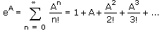

When x is a positive integer, y is multiplied by itself x times.
When x is a negative integer, the inverse of y is multiplied by itself x times.
Operands:
y is a scalar or square matrix.
x is a scalar or vector. If y is a matrix, x must be an integer or a rational number that is a multiple of 1/60, and must be called explicitly in the exponent placeholder, not as a variable name.
Notes:
If A is a square matrix, you can evaluate eA symbolically and the result is the following infinite sum:

To override this behavior and apply the exponential operator to each element of A individually, use the vectorize operator.
In the case where y is e, a different, more accurate algorithm is used, which suffers less from roundoff errors in the case of very large or small exponents. The most accurate values for very large exponents of e can be found by using symbolic evaluation of exp(x) with a decimal argument, for example, exp(1.0) → 2.7182818284590452354.